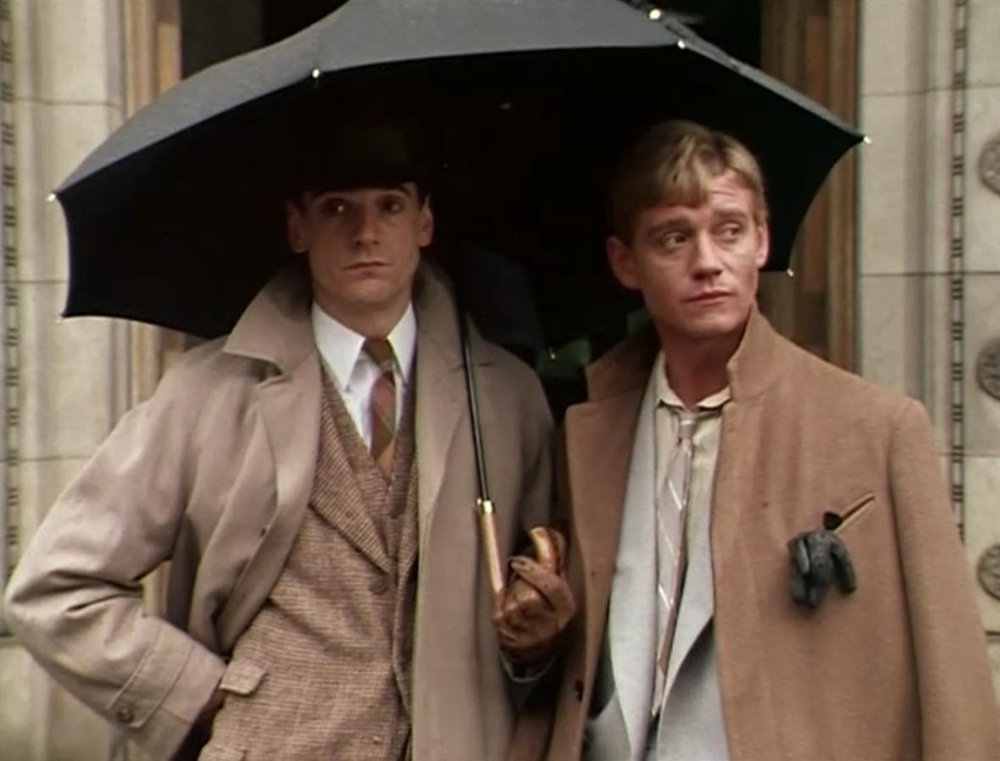
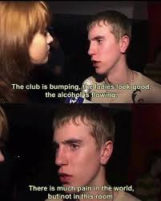

you'll be robbed and poisoned and infected and robbed
it's raining out right now... wonderful pitter-pattering ambience. i think once it clears up i'll go biking again and soak up the after-rain smell. i've been biking a lot recently — mother has made a habit of it and after being subliminally influenced by my friend posting live bike updates i've started doing it too. it's fun! i took a evening ride a few days ago and everything felt so electric and magical... i took photos of cool lighting but i think i will refrain from posting pictures of my neighborhood bahaha
mother and i have started watching brideshead revisited (1981) again. we watched the first episode a while ago but never continued it... we're up till episode 4 now and plan to finish it this summer! i'm enjoying it a lot. cordelia is my favorite so far im obsessed with the way she articulates. everyone's little body movements are very good.

is the dome by vanburgh? it looks later.
oh, charles, don't be such a tourist. what does it matter when it was built, if it's pretty?
it's the sort of thing that interests me.
the dome struck me. affixed to this stern old palace, overlooking it all, sebastian's little place of escape; hopping out through the windows onto the roofs where you're too distant for anyone to reach you... detachment from the whole yet reluctant obligation to it. all the shots (even elsewhere) of sebastian looking down on people over balconies. it's good it makes me want to work on cat comic more... it reminds me of all the mixed & modified architecture in aerie

i'm slowly working my way through disco elysium... this is my 2nd playthrough; i was really interested in the world lore the first time i played but felt i didn't get to dive too deep into it — so this time i'm doing a psychic/apocalypse cop build and chasing the pale around. i managed to finish the soona questline this time! i also forgot how funny the game is. every time.
i have plans for an eventual replaythrough doing a heavy encylopedia build in order to consume more of this game's delicious worldbuilding. i might also do a physical build sometime in the far future because im curious to see how that version of the game plays. disco elysium is so big... it is like an expanse of warm nutrient rich soil, and i, am but a single worm.... ouh.... aigh.......
i'm doing artfight.... i'm doing artfight.... to break the ice i made this thing for my friend mart. i'm always so scared of drawing digitally because i'm much more used to pen and paper but i guess i can do it... i guess... (i could also just draw traditionally and upload pictures but that feels wrong to me for mysterious reasons) and people are already drawing my awesome cat... it warms my heart so deeply
{kind=link}
ok that's all. bjaygame is still going well. i'll update about it later